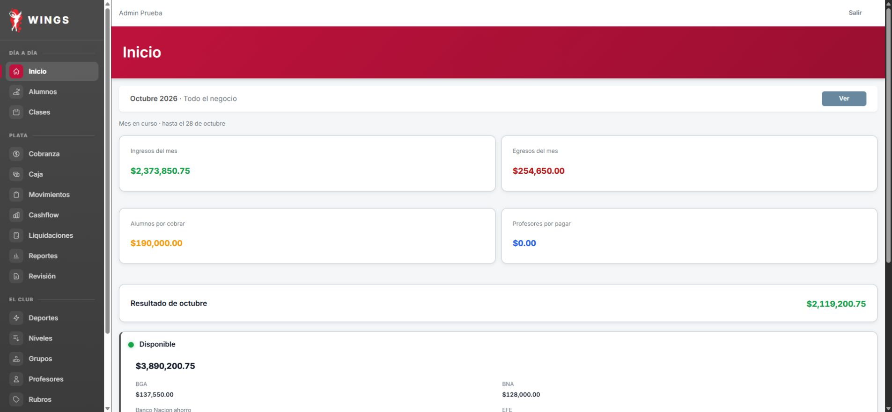
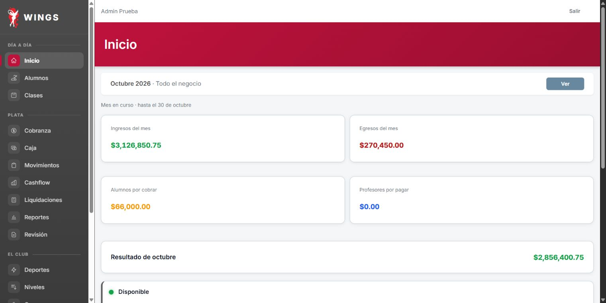
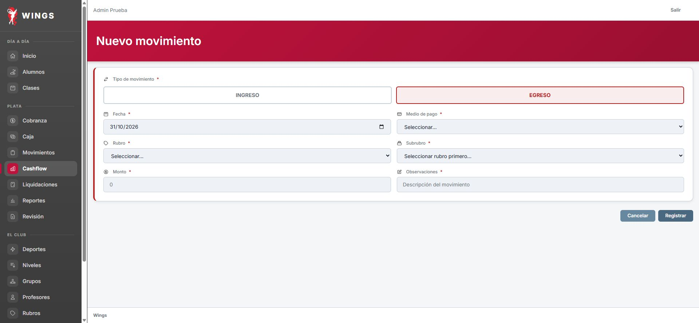
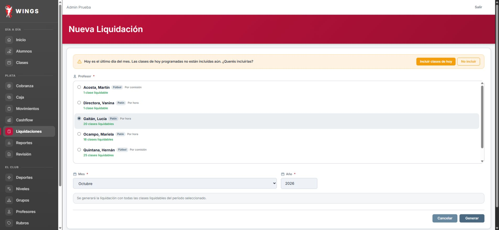

37situaciones:23Sí/11Parcial/2No/1Noejecutado. Cajas36/38/40/42 validadas. Deuda0, disponible4.959.900,75. SueldoSandra sin registrar por rubro ausente; Lucía no generada por20clases frente17. T14 para Claude; no aceptación integral.
| Caso | Resultado | Observado y evidencia |
|---|---|---|
| 19.1 | Parcial | Se abrió caja #36 con $10.000. El intento de escribir 100000 mediante fill quedó en 10000.00 por interacción con el campo. No se obtuvo el aviso >50%, no se reabrió ni rectificó. Límite de ejecución, no rechazo de Wings demostrado. TXT · JPG |
| 19.2 | Sí | Sin motivo: validación HTML «Completa este campo». Con el motivo del guion se condonaron $14.000. Cobranza pasó de $248.000 a $234.000; 100 Al día y 0 En plazo. No se generó un movimiento de plata visible por esta acción. TXT · JPG |
| 19.3 | Parcial | Con el importe de fila $50.000, el resumen mostró $44.000. No se envió ese formulario ni se probó el diálogo Continuar/Cancelar. Se sustituyó por $44.000 y se cobró una vez en efectivo (CUOTA-133). Deuda total $190.000, 101 Al día: Joaquín dejó la lista de morosos. Diferencia frente al catálogo en la presentación del exceso; confirmación no probada. TXT · JPG |
| 19.4a | Sí | Sin rubro: Selecciona un elemento de la lista. Con monto0: El importe debe ser mayor que cero. Conserva campos; 13movimientos y esperado270500 sin cambios. TXT · TXT |
| 19.4 | Sí | Movimiento #171 de Limpieza corregido $3.800 → $3.500 como exige este caso. Pantalla «Movimiento actualizado». Los gastos de la caja bajaron $6.300 → $6.000 y el esperado $267.700 → $268.000 (el primer esperado es cuenta inferida de los renglones, no captura anterior). TXT · JPG |
| 19.5 | Parcial | Carlos confirmó manualmente; Librería172 desapareció y gastos3500/13movimientos. No se verificó por pantalla auditoría de quién/cuándo eliminó. TXT · MD |
| 19.6 | Sí | Hernán guardó la #60 con 23 ausentes, botón exacto btn-guardar-asistencias una vez. Su listado cambió Pendiente → Sin presentes. El 31/10 la lista filtrada Sin asistencia no contiene esa clase. Observación adicional: el Inicio de Sandra la rotuló «Sin lista» aun después del guardado; no se corrigió. TXT · JPG |
| 19.6b | Parcial | Esperado270500, MP146000 separado y Librería ausente. El detalle muestra fecha, concepto, medio e importe, pero no hora por movimiento. TXT · TXT |
| 19.7a | Sí | Contado271000/cambio300000 rechazado: El cambio no puede superar el efectivo contado. Caja siguió abierta. TXT |
| 19.7 | Sí | Contado271000, esperado270500, sobrante500, cambio10000. CERRADA y luego VALIDADA, ingresos caja410000; no ingreso extra por diferencia. TXT · TXT |
| 20.1 | Sí | Patines85000MP y remera18000efectivo registrados una vez; esperado178200, MP241000, ingresos413000. TXT · TXT |
| 20.2 | Sí | Sin motivo no cancela (El motivo es obligatorio); Cancha inundada cancela solo71 y permanece en hoy, Cancelada con motivo. TXT · TXT · TXT |
| 20.3 | Sí | Hernán ve clase71 Cancelada, aviso no se pueden registrar asistencias y Guardar deshabilitado. No se enviaron marcas. Ingreso recuperado mediante reinicio de un contador autorizado por Carlos. TXT · MD |
| 20.4 | Sí | Horario14–13 rechazado conservando campos;14–15 creó clase82 única31/10 con Hernán. Solo Martín/Hernán de Fútbol ofrecidos. Visibilidad por Hernán comprobada22.2. TXT · TXT · TXT |
| 20.5 | Sí | Mariela abrió50 del31/10 estando29/10. Aviso Esta clase todavía no ocurrió; casillas y Guardar deshabilitados. No se guardaron marcas. TXT |
| 20.6 | Sí | Celular1145123401→1145123499 en ficha y listado. Tutor conserva1145123401. Al día y pagoOct33.000/recibo4 iguales; sin nueva cuota visible. TXT · TXT · TXT |
| 20.7 | Sí | Inicio Rocío muestra Caja abierta, hora15:00, Cobrar y Registrar. TXT |
| 20.8 | Parcial | Ve los 11 cobros de cuota del 28/10 y otros 2 movimientos operativos; no muestra quién los hizo ni enlaces a recibos. El enlace a caja 36 devuelve Sin permiso. Rubros del dueño no ofrecidos en el filtro. TXT · TXT |
| 20.9 | Parcial | Listado muestra 3 cajas: 29/10 #38, 26/10 #16 y 19/10 #8. El guion esperaba dos. No aparecen cajas de Sandra ni Pablo; no se verificó aquí el límite temporal de 30 días. TXT |
| 20.10 | Sí | No hay Nuevo en Clases. /clases/create muestra restricción en castellano; Volver regresa a Inicio de Rocío. TXT · TXT |
| 21.1 | Parcial | Lista22 guardada y recargada:17/18 presentes; Berenice ausente. No muestra aviso de deuda ni bloqueo de entrada para Berenice. Ocho excesos muestran EXTRA predeterminado, conservado. TXT · TXT |
| 21.2 | Parcial | Aceptó $20.000 efectivo sin motivo (rechazo esperado no ocurrió). Guardado una vez, recibo170; Berenice Deudor $66.000: septiembre23.000/octubre43.000. No se repitió el cobro ni se agregó motivo después. TXT · TXT |
| 21.3 | Sí | Felipe quedó Al día tras un único pago EFE76.000. PDF CUOTA171 descargado, texto y render comprobados: agosto38.000 y octubre38.000, total76.000. TXT · PDF · PNG |
| 21.4 | Sí | Un solo toque en listado dejó Santino inactivo. Ficha conserva octubre28.000 pendiente. Cobranza66.000,103activos/102AlDía/1Deudor; búsqueda Cobrar por DNI no lo encuentra. No reactivado. TXT · TXT · TXT · TXT |
| 21.5 | Sí | Transferencia2 registrada una vez, EFE -500.000/Galicia +500.000:1.460.300/637.550. Dashboard conserva ingresos3.126.850,75/egresos270.450 y disponible4.730.400,75. Cashflow Año sí suma ambos tramos en totales brutos (ingresos/egresos+500.000; resultado igual); diferencia de presentación registrada. TXT · TXT · TXT |
| 21.6 | Sí | Rocío ve gasto12.000 en Movimientos sin Editar. Ruta de edición216 observada como Admin devuelve Sin permiso en castellano. No se envió modificación; gasto12.000 conservado luego en caja de Pablo. TXT · TXT |
| 21.7 | Parcial | Pablo encuentra cobro Joaquín44.000 EFE28/10 en caja36; no muestra quién cobró. Movimientos28–30 ofrece solo rubros operativos y no la transferencia del dueño; filtro28 muestra13filas. TXT · TXT |
| 21.8 | Sí | Caja40 Pablo abierta: esperado270.000=10.000+260.000netoEFE; MP171.000 aparte. Gasto Reparaciones sigue12.000. TXT |
| 22.1 | Sí | Cobro182 MP66.000 una vez, septiembre23.000/octubre43.000. Berenice Al día y Cobranza0:103activos/103AlDía. TXT · TXT |
| 22.2 | Sí | Hernán ve y abre su recuperación82 del31/10 14–15. Guardado único15/15, confirmado tras recarga. Catorce exceden plan; se conservó opción EXTRA predeterminada (guion no indicó otro motivo), registrada para revisión. TXT · TXT |
| 22.3 | Sí | Movimiento directo135 Luz62.000 Galicia, Admin Prueba, Editar/Eliminar visibles. Galicia637.550→575.550; Dashboard egresos270.450→332.450. TXT · TXT |
| 22.4 | Parcial | Luz135 corregida62.000→61.500 con motivo Descuento por débito automático. Galicia576.050. Listado solo Editar/Eliminar, sin enlace a detalle/historial; anterior/nuevo/actor/fecha de corrección no comprobados por pantalla. TXT · TXT |
| 22.5 | No | No se pudo registrar sueldo250.000: Cashflow Nuevo EGRESO no ofrece rubro Sueldos ni subrubro Op-Sandra Vidal. No se creó rubro ni se usó otro. Reporte/invisibilidad Sandra sin gasto quedan sin probar; cierre esperado tendrá+250.000EFE y-250.000egresos respecto guion. Reporte Sueldos consultado: Sandra no figura; no demuestra la inclusión de un sueldo registrado. TXT · TXT |
| 22.6 | No | Formulario Nueva, Lucía/octubre2026, muestra20 clases liquidables; guion17×12.000=204.000. No muestra total previo. No se pulsó Generar por diferencia de cantidad; bloqueo de Cerrar antes01/11 queda sin probar. No se creó ni pagó liquidación. TXT |
| 22.7 | Sí | Pablo no tiene Liquidaciones en menú; ruta forzada muestra Sin permiso en castellano, sin importes. Volver regresa a Inicio. TXT · TXT |
| 22.8 | No ejecutado | Dependiente de22.6: no hay liquidación de Lucía creada porque formulario ofrece20clases contra17delguion. Listado0liquidaciones, sin cargo ni pago. TXT |
| 22.9 | Parcial | Tras noche22: Cashflow y Reportes coinciden por medio y disponible4.959.900,75; Galicia576.050/Nación128.000/MP2.638.550,75; EFE1.617.300 (+250.000 por sueldo no registrado). Reportes ingresos3.417.850,75(-121.000),egresos331.950(-250.000),resultado3.085.900,75(+129.000) respecto guion.138filas de octubre recorridas en5páginas,0repeticiones exactas texto+enlaces. No se generó liquidación por diferencia20/17, por pagar0; no prueba gasto de una liquidación abierta. TXT · TXT · JSON · TXT |


22.5: formulario sin Sueldos.22.6:20clases, guion17.22.8 dependiente sin ejecutar. Reportes ingresos121.000 menores; causa sin atribuir.


Control documental independiente; control interno pendiente de Claude.